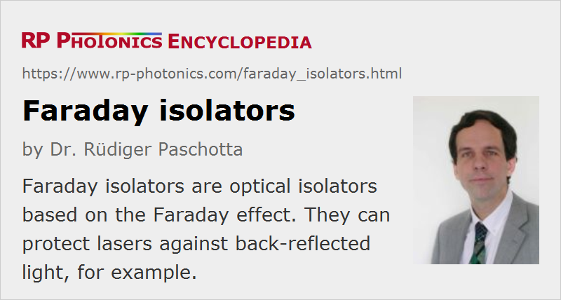

Faraday Isolators
Definition: optical isolators based on the Faraday effect
More general term: optical isolators
German: Faraday-Isolatoren
Categories: general optics, photonic devices
How to cite the article; suggest additional literature
Author: Dr. Rüdiger Paschotta
A Faraday isolator is a kind of optical isolator, i.e., a device which transmits light in a certain direction while blocking light in the opposite direction. Faraday isolators are based on Faraday rotators and constitute the technologically most important type of optical isolators.
A variant is an optical circulator, having at least three optical ports. Light injected into port 1 will exit at port 2, while input at port 2 will be sent to port 3, and input at port 3 to port 1.
Polarization-sensitive Faraday Isolators
The simplest type of Faraday isolator is polarization-sensitive in the sense that it works only when the input beam has a prescribed direction of linear polarization. Here, a properly polarized and collimated input beam passes a first polarizer (pol 1 in Figure 1) with minimum loss, then a 45° Faraday rotator, and finally another polarizer (pol 2) with its transmitting axis being rotated by 45°, such that the transmission losses are small.
When light is reflected back to the output port of the isolator with an unchanged polarization state, it can fully transmit the output polarizer (pol 2). Then, however, its polarization direction is rotated by another 45° in the Faraday rotator, so that this light will be blocked at the input polarizer, or can be sent to the separate output port.
Note that the output polarizer (pol 2) is important if light may be reflected back with a modified polarization state.
If the rotation angle of the Faraday rotator somewhat deviates from 45° (either due to fabrication errors or due to operation away from the design wavelength), the orientation of the output polarizer may still be adjusted for maximum transmission, but in that case the degree of isolation is reduced. It may be better to optimize that polarizer's orientation for maximum isolation, while accepting a somewhat higher insertion loss in forward direction.
Polarization-insensitive Faraday Isolators
A polarization-insensitive Faraday isolator is a device which works for arbitrary polarization of the input beam. Such devices are often required in the context of fiber optics, because many fibers are not polarization-maintaining. In particular, optical fiber communication systems are usually operated with undefined polarization state, and Faraday isolators as well as other components are then required to work with arbitrary polarization states.
The basic principle of a polarization-insensitive isolator is to first spatially separate the orthogonal polarization components of the input beam with some kind of polarizer, then send both through a Faraday rotator, and combine them again in the second polarizer.
A type of device as frequently used in fiber optics is shown in Figure 3. Here, the polarizers are birefringent wedges, made e.g. of rutile (TiO2). Backward-propagating light of any polarization direction can be transmitted, but will appear with an offset beam position (Figure 3, bottom), and will thus not be launched back into the input fiber. Such devices can be fitted into rather compact packages, as shown in Figure 4.
Note that a polarization-insensitive isolator will in general not preserve the polarization state (or simply rotate it), since there is an arbitrary relative phase change between the two polarization components. That phase change depends on temperature and wavelength.
Insertion Loss and Degree of Isolation
For many applications, a low insertion loss, i.e., a low loss for forward-propagation light, is essential. The insertion loss is determined by several factors: the type and quality of the polarizers used, residual reflection losses on anti-reflection coatings, and the precision and uniformity with which a 45° rotation angle is obtained in the rotator.
Another important performance figure of an optical isolator is the degree of isolation, i.e., the attenuation achieved for back-reflected light, also called return loss. Typical Faraday isolators achieve a return loss of the order of 30 to 40 dB. A high degree of isolation is generally more difficult to achieve for high-power devices, where the beam in the Faraday medium covers are larger area and is thus more sensitive to field inhomogeneities. The quality and alignment of the polarizers used is also important. A lower degree of isolation may result from operation at a non-optimized wavelength, from improper alignment or large divergence of the input, or from thermal effects when the isolator is operated with a high optical average power.
If the return loss achievable with a single isolator is insufficient, a combination of two (or even more) isolators may be used. There are devices available where two isolators are packaged into one housing (double-stage isolators). Such a combination may also be used to widen the optical bandwidth with sufficient isolation.
Some “tunable” isolators allow the user to adjust the angular orientation of the polarizers, and thus to optimize the isolation for different wavelengths. In that way, a single device may be used to cover a broad wavelength region, e.g. from 500 nm to 750 nm, limited only by the bandwidth of the anti-reflection coatings. For optimizing the bandwidth of a fixed setting (as required e.g. for use with a tunable titanium–sapphire laser), one requires a Faraday rotator based on a medium with a low relative wavelength dependence of the Verdet constant.
Dual-stage Isolators
In some cases, a sufficiently high degree of isolation (e.g. 60 dB) can be achieved only with a dual-stage isolator. Essentially, this means that one uses two Faraday isolators in sequence; of course, only a single polarizer is needed between the two rotators.
The two isolators may either rotate the polarization in the same direction, resulting in a total rotation angle of 90°, or they rotate in opposite directions, generating no net rotation.
The insertion loss will typically be somewhat higher with a dual-stage device.
High-power Operation
For operation of an isolator at very high optical power levels, various effects have to be considered:
- For high average powers, the parasitic absorption in the Faraday rotator can cause substantial thermal lensing, which distorts the beam profile and can also affect the degree of isolation.
- High-power devices usually have exit ports for the rejected light, rather than internal absorbers, in order to avoid the associated heating inside the device.
- For high peak powers, optical damage may occur. To prevent this, a sufficiently large input aperture is required.
- High peak powers may also lead to self-focusing. The power limit depends not only on the input beam radius but also on the length of the device.
Of course, not only the Faraday rotator, but also the polarizers have to be suitable for high-power operation.
Commercially available high-power Faraday isolators can handle optical average powers up to the order of 100 W with not too strong beam distortions. Particularly some applications in combination with high-power fiber lasers and amplifiers demand higher powers, and more advanced devices for powers of the order of 1 kW appear are being developed. For fiber-coupled devices, the power levels are more limited, usually to well below 100 W.
Fiber-based Faraday Isolators
It is possible to fabricate optical fibers from glasses with a high Verdet constant [1, 4, 9]. With such fibers, one can make entirely fiber-based (not only fiber-coupled) Faraday isolators. Although the performance achieved so far with that method does not reach that of bulk devices, this development may be useful for future fiber laser sources.
Applications
Faraday isolators and circulators find many applications in laser technology:
- In many cases, they are used to protect some laser or amplifier against back-reflected light. Amplifier chains sometimes contain several isolators between the different amplifier stages, preventing not only back-reflected light but also amplified spontaneous emission from having detrimental effects. In optical fiber communication systems, polarization-insensitive fiber-coupled isolators are frequently used e.g. before and after any fiber amplifiers.
- Various kinds of interferometers and other devices (e.g. amplifiers) in bulk or fiber-optic form use circulators for separating reflected light from the forward-propagating beam. This allows e.g. to realize a double pass through an amplifier.
- The polarizing property of a polarization-dependent isolator within a laser resonator (e.g. of a fiber laser) may be exploited for enforcing a linear polarization state or for mode locking with nonlinear polarization rotation.
There are also various applications of pure Faraday rotators, not functioning as isolators.
Suppliers
The RP Photonics Buyer's Guide contains 66 suppliers for Faraday isolators. Among them:
Questions and Comments from Users
Here you can submit questions and comments. As far as they get accepted by the author, they will appear above this paragraph together with the author’s answer. The author will decide on acceptance based on certain criteria. Essentially, the issue must be of sufficiently broad interest.
Please do not enter personal data here; we would otherwise delete it soon. (See also our privacy declaration.) If you wish to receive personal feedback or consultancy from the author, please contact him e.g. via e-mail.
By submitting the information, you give your consent to the potential publication of your inputs on our website according to our rules. (If you later retract your consent, we will delete those inputs.) As your inputs are first reviewed by the author, they may be published with some delay.
Bibliography
| [1] | E. H. Turner and R. H. Stolen, “Fiber Faraday circulator or isolator”, Opt. Lett. 6 (7), 322 (1981), doi:10.1364/OL.6.000322 |
| [2] | C. A. Klein and T. A. Dorschner, “Power handling capability of Faraday rotation isolators for CO2 laser radars”, Appl. Opt. 28 (5), 904 (1989), doi:10.1364/AO.28.000904 |
| [3] | P. A. Schulz, “Wavelength independent Faraday isolator”, Appl. Opt. 28 (20), 4458 (1989), doi:10.1364/AO.28.004458 |
| [4] | J. Ballato and E. Snitzer, “Fabrication of fibers with high rare-earth concentrations for Faraday isolator applications”, Appl. Opt. 34 (30), 6848 (1995), doi:10.1364/AO.34.006848 |
| [5] | E. A. Khazanov, “Slab-based Faraday isolators and Faraday mirrors for 10-kW average laser power”, Appl. Opt. 43 (9), 1907 (2004), doi:10.1364/AO.43.001907 |
| [6] | E. A. Khazanov et al., “Compensation of thermally induced modal distortions in Faraday isolators”, IEEE J. Quantum Electron. 40 (10), 1500 (2004), doi:10.1109/JQE.2004.834766 |
| [7] | Z. Yu and S. Fan, “Complete optical isolation created by indirect interband photonic transitions”, Nature Photon. 3, 91 (2009), doi:10.1038/nphoton.2008.273 |
| [8] | L. Sun et al., “Compact all-fiber optical Faraday components using 65-wt%-terbium-doped fiber with a record Verdet constant of −32 rad/(Tm)”, Opt. Express 18 (12), 12191 (2010), doi:10.1364/OE.18.012191 |
| [9] | L. Sun et al., “All-fiber optical isolator based on Faraday rotation in highly terbium-doped fiber”, Opt. Lett. 35 (5), 706 (2010), doi:10.1364/OL.35.000706 |
| [10] | D. Jalas et al., “What is – and what is not – an optical isolator”, Nature Photon. 7, 579 (2013), doi:10.1038/nphoton.2013.185 |
See also: Faraday rotators, polarizers, return loss, The Photonics Spotlight 2010-06-09
and other articles in the categories general optics, photonic devices
|  |
If you like this page, please share the link with your friends and colleagues, e.g. via social media:
These sharing buttons are implemented in a privacy-friendly way!